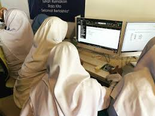
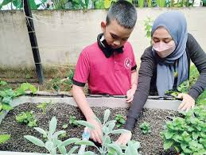
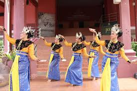
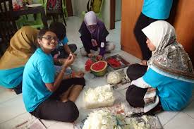
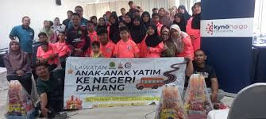
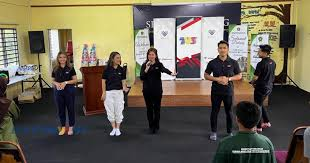

Our Activities & Programs
We believe in creating a vibrant and engaging environment where children can learn, play, and discover their potential. Our programs are structured to provide a routine, while also offering exciting opportunities for growth and exploration.
A Typical Day at Rumah Bakti Nur Syaheera
Our daily schedule is designed to provide structure, discipline, and ample time for learning and recreation:
Special Programs & Enrichment Activities

IT & Computer Literacy
{kind=link}
Regular sessions to equip children with essential computer skills, digital literacy, and online safety knowledge for the modern world.

Gardening & Environmental Club
{kind=link}
Teaching children about nature, sustainability, and responsibility through hands-on gardening projects within our home's compound.

Cultural Arts & Performances
{kind=link}
Encouraging appreciation for Malaysian culture through traditional dance, music, and storytelling, often leading to performances during festive seasons.

Practical Life Skills Workshops
{kind=link}
From basic cooking and sewing to financial literacy and home maintenance, these workshops prepare older children for independent living.

Educational Outings & Excursions
{kind=link}
Organizing visits to museums, libraries, parks, and other educational sites to broaden their horizons and provide real-world learning experiences.

Mentorship & Counseling
{kind=link}
Mentorship & Counseling
Providing one-on-one mentorship and access to counseling services to support their emotional well-being and personal development.
Upcoming Events & Celebrations!
We believe in celebrating milestones and creating joyous memories for our children.
Annual 'Hari Sukan' (Sports Day)
Date: August 15, 2025
A day of fun-filled athletic competitions and team spirit, promoting healthy lifestyles.
Deepavali Open House
Date: October 2025
Join us for a colourful celebration of the Festival of Lights, sharing food and cultural experiences.
School Holiday Program
Date: November-December 2025
Special workshops, outings, and enrichment activities during the year-end school break.